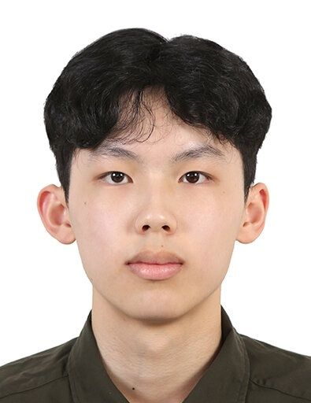
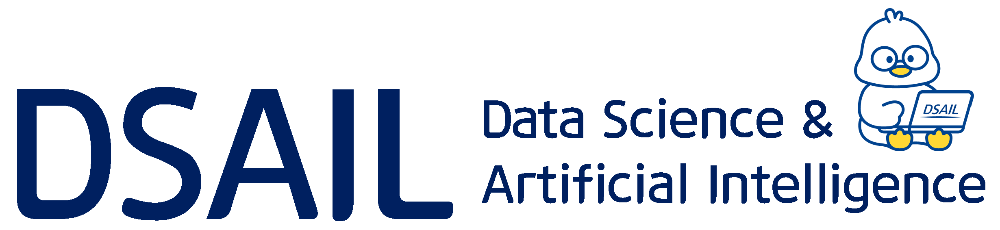
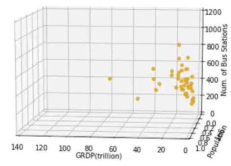

Basic Computing: First Adventures in Computing
Fall 2026Teaching Assistant
One-on-one help with programming and debugging, and feedback on project proposals and presentations.

I'm an undergraduate majoring in Computer Science and Engineering at Seoul National University, in the College of Liberal Studies.
I'm interested in LLM agents, information retrieval, and evaluating how AI systems use evidence and tools.
Currently, I build RAG applications at IntelliSys. I'll join DSAIL at KAIST as a winter research intern with Prof. Chanyoung Park.

Incoming Research Intern · Prof. Chanyoung Park
AI Engineering Intern
Building retrieval-augmented generation applications, with work spanning document processing, information retrieval, and answer evaluation.
An iOS strength-training app I built and released on the App Store. Supports workout logging, automatic weight progression, and HealthKit integration.
Selected for SNU's Spring 2026 Computer Programming Extra Project showcase.

High-school team project modeling whether proposed Daejeon tram routes pass through administrative districts. I led data preparation, visualization, and logistic regression modeling using R and Python.
College of Liberal Studies (자유전공학부)
B.S. in Computer Science and Engineering
Teaching Assistant
One-on-one help with programming and debugging, and feedback on project proposals and presentations.
Teaching Assistant
Guided first-year students through discussions and collaborative assignments on research safety.